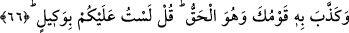
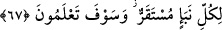
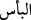
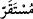

Başka bir hadiste şöyle vârid olmuştur: “Ümmetim kılıcı (cihadı) bıraktığı vakit,
kıyamet gününe kadar onu bir daha almayacaktır.”[123] Burada, Rasûlullah (s.a.)’in
mûcizelerinden biri tezâhür ediyor. Şimdi durum tam da onun haber verdiği gibidir.
“”, yani düşmanlık harbde şiddete baş vurmaktır. Ümmetin içinde kin ve intikam
duygularının yaygınlaşması, yöneticilerin Allah’ın kitabı ile hükmetmemeleri
sebebiyledir. Mü’minlere düşmanın musallat olması ise müslümanların Allah ve
Peygamber ile olan ahdini bozmalarındandır. Nitekim bazı hadislerde bu hususa işaret
edilmiştir.
“Bak” Ey Muhammed, onlara “anlasınlar diye” va’d (müjde) ve vaîd (korkutma) ile
halden hale çevirerek “âyetlerini” Kur’an âyetlerini “nasıl açıklıyoruz!” Yani, sûrenin
başından buraya kadar değişik şekillerde nasıl bir âyetin peşinden başka bir âyeti
getirip onlara açıklıyoruz.
“Belki anlarlar”, yani anlasınlar da işin iç yüzüne vâkıf olsunlar ve içine düştükleri
büyüklenme ve inat hastalığından dönsünler diye.
66. Kur’an hak olduğu halde kavmin onu yalanladı. De ki: Ben size vekil (kefil)
değilim.
“O” va’d edilen azab ya da onun geleceğini haber veren Kur’an “hak olduğu halde”
Halbuki o azab mutlaka vaki olacaktır. Ya da bu ifadeden maksad, bu kitab her
söylediğinde doğrudur, demektir.
Onlara “de ki: “Ben, size vekil değilim!” Sizin işlerinize vekalet eden koruyucu
değilim. Kuvvete başvurarak sizi yalanlamaktan men edemem. Bunların doğruluğunu
tasdik etmeye de zorlayamam. Ben sadece bir uyarıcıyım. İleride başınıza gelecekleri
size haber vererek vazifemi yapmış olmaktayım.
67. Her haberin gerçekleşeceği bir zaman vardır. Yakında siz de gerçeği
bileceksiniz.
Kur’an’da bildirilen haberlerden, “her haberin gerçekleşeceği bir zaman vardır.” “”, İsm-i zamandır. Yani azabınızın gerçekleşeceği ve gelip çatacağı bir vakit vardır.
“Yakında bileceksiniz.” va’dedilen azab dünyada, ahirette veya her ikisinde meydana
geldiği zaman, bileceksiniz.
Akıllı kişiye gereken, sıkıntıları üzerinden def etmesi için Allah’a yakarmak ve